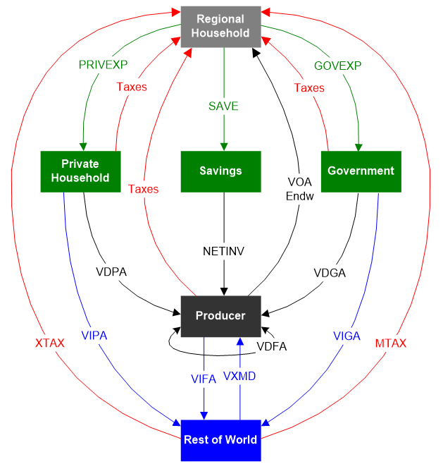
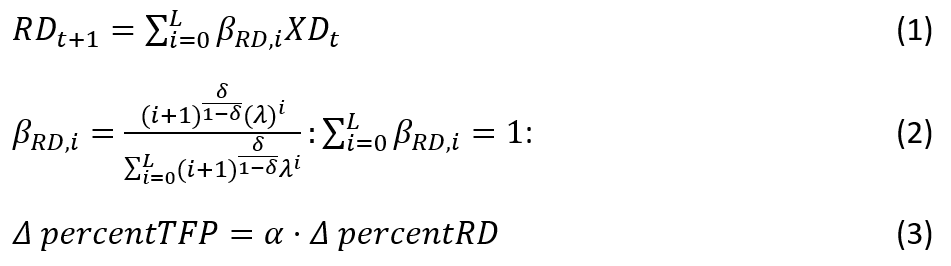
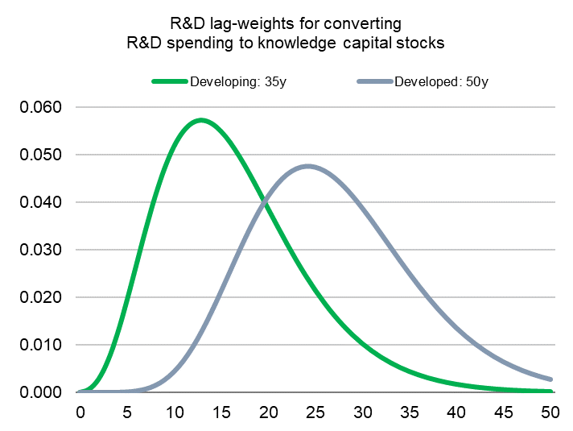

4. GTAP model details
The GTAP (Global Trade Analysis Project) model is a multi-commodity, multiregional computable general equilibrium (CGE) model that tracks bilateral trade flows between all countries in the world and explicitly models the consumption and production for all commodities of each national economy (Corong et al., 2017; Hertel, 1997). The standard version of the model is a comparative static CGE model that shows differences between possible states of the global economy for a given year – with and without policy or with respect to base year and future year. At the core of the GTAP model is an input-output accounting framework that accounts for all sources and uses of each market good and economic endowment. Figure S.4.1 is a stylized framework of the GTAP model and summarizes the key flows across economic agents in the model.

Figure S.4.1: A stylized framework of the GTAP model. Source: the figure is adapted from Corong et al. 2017
Consumption framework. The model has a single representative household for each region (the Regional household). The red line in Figure S.4.1 represents income flows to the household. The household receives all gross factor payments net of the capital depreciation allowance (VOA - Payments of Factors of Production), plus the receipts from all indirect taxes (including Export and Import Taxes – XTAX, MTAX). Regional income is distributed across three broad categories—Private Household, Government Expenditures, and Savings— by maximizing a top-level Cobb-Douglas utility function. Saving is a unitary good, while Private Household and Government Expenditures utilize sub-level utility functions to determine consumption of each domestic product (Value of Domestic purchases of Private Household and Government - VDPA, VDGA - black lines in Figure S.4.1) and imported commodities (Value of Imported purchases of Private Household and Government - VIPA, VIGA - blue lines in Figure B.1). The sub-level utility function for the Private Household is based on a constant differences of elasticities (CDE) function (Hanoch, 1975). This function is less demanding to solve than the flexible functional forms and permits calibration of income elasticities and own-price elasticities independently, and importantly, it is non-homothetic. The sub-utility function for public expenditure is based on a constant elasticity (CES) utility function (Arrow et al., 1961).
Production framework. GTAP uses nested CES functions to model producer behavior for each region. At the top level of the production framework, producers combine aggregate value-added and intermediate inputs, according to a single CES function. Sub-level CES functions produce aggregated value-added from each primary factor commodities and aggregated intermediate input from each purchased inputs. Factors of production, or endowments, are of three types: perfectly mobile (e.g., labor and capital), partially mobile or sluggish (e.g., land) and sector-specific factors (natural resources). Each purchased input can be sourced either domestically or internationally, and this is modelled using another sub-level CES function (Value of Domestic and Imports of Firms – VDFA and VIFA in Figure S.4.1.).
International trade. The most notable restriction on trade in the GTAP model is that commodity sourcing is at the border: for each product, all domestic agents (i.e., Private Household, Government, Producers) in an economy use the same mix of imports from different countries, though each agent chooses their own combination of import and domestic product. There is also a two-level system of substitution between products from different sources - an import-domestic top-level CES function above an import-import sub-level CES function. Trade flows generate supply and demand for international transport services, and this is accounted for in the model. There is also no international trade in primary factors in the standard version of GTAP.
We use the GTAP Database Version 10 for year 2014 (Aguiar et al., 2019). It represents globally consistent data on consumption, production, and international trade (including transportation and protection data), energy data and CO2 emissions for 140 regions and 57 commodities. These regions and commodities are aggregated into 37 regions and 17 commodity groups. The GTAP Data Base is composed of Input Output Tables statistics, which are mainly contributed by members of the GTAP Network. The GTAP 10 Database includes separate IO tables for 121 individual countries representing 98 percent of global gross domestic product and 92 percent of the world’s population. Key value flows in the database include both input-output flows within each region, bilateral international trade flows, capital stock and savings information, international transports costs, domestic input and output subsidies, export subsidies and import tariffs, as well as revenue flows from taxes and tariffs. Most flows are measured at both tax-free and tax-paid prices (i.e., taxes are implicitly accounted for). Key behavioral parameters provided with the GTAP Data Base include the source-substitution or Armington elasticities (used to differentiate goods by country or origin), the factor substitution elasticities, the factor transformation elasticities affecting the sluggish factors, the investment parameters, and the parameters governing the consumer demand elasticities. The first three sets of parameters are taken from external sources, while the rest are calibrated from the database.
The standard GTAP model is implemented using the GEMPACK (General Equilibrium Modelling PACKage) suite of economic modeling software (Harrison & Pearson, 1996). GEMPACK is distributed by The Centre of Policy Studies Knowledgebase at Victoria University, Melbourne, Australia (https://www.copsmodels.com/gempack.htm). Following the standard for the GEMPACK program, all equations of the GTAP model are recorded not in levels (e.g., million USD), but in percentage change form. Due to non-linearities in formulae and update equations– which result in changes in the underlying shares and price elasticities– the solution requires non-linear methods. The GTAP model can be run via command line as well as the Windows-based RunGTAP tool. RunGTAP is a visual interface to various GEMPACK programs and allows the user to run simulations interactively in a Windows environment using the GTAP general equilibrium model. No previous knowledge of the GEMPACK language or programming skills is necessary to use the program. Results and complementary information for further analysis are also provided in a Windows environment and can be accessed interactively. RunGTAP also has several add-on tools that can be helpful to users. The welfare decomposition tool permits the user to break down the regional equivalent variation metric into its component parts, including changes due to allocative efficiency, terms of trade, improved technology, and endowments. The systematic sensitivity analysis tool allows uncertainty analysis in the model shocks and parameters, thereby generating both mean and standard deviations of model output. Finally, the subtotals tool utilizes numerical integration techniques in order to exactly decompose changes in the model outputs as sums of the contributions made by the change in each exogenous variable (Harrison, Horridge & Pearson, 2000). The subtotals are particularly useful in understanding the key drivers of model outcomes. All the input files are binary header array (HAR) files, to keep the size of the files small. The HAR files are designed to work with the GEMPACK program. There is also a GAMS version of the standard GTAP model and software exist for readily converting these HAR files to the General Algebraic Modeling System (GAMS) data exchange file (GDX) format, as well as to CSV files.
Capital, skilled labor, and unskilled labor are perfectly mobile in the GTAP model. This report assumes perfect labor mobility, which means that labor can move across sectors but not across skill types. In general, perfect mobility implies that returns to each factor will be equated across all sectors. Therefore, there is a single economy-wide price for each mobile factor (capital, skilled and unskilled labor), with market equilibrium determined by setting aggregate demand equal to (exogenous) supply. Land is partially mobile (or sluggish in GTAP terminology). The supply of aggregate land to individual activities is less than perfectly elastic, as there is a transformation frontier (Constant Elasticity of Transformation) that moderates the movement of the land across activities. This results in sector-differentiated land prices for each land using sector. The economy-wide price of each land type is then calculated as the CET aggregate price of each land factor.
4.1. Productivity growth from agricultural R&D
Increasing public agricultural R&D investments is one of the key levers policy makers can use to alter the trajectory of agricultural productivity. Following Baldos et al. (2020), GTAP models implements R&D policy by modelling the linkages between the flow of R&D spending, the stock of accumulated knowledge capital, and subsequent total factor (TFP) productivity growth (Alston et al., 2011; Griliches, 1979; P. Heisey et al., 2011; Huffman, 2009). TFP captures the rise in total output given all inputs used in agricultural production, unlike crop yields, which ignores the role of other farm inputs (i.e., total output per area of land input used). The historical national R&D spending data are based on Fuglie (2018), who complied data on public agricultural R&D expenditures from the literature[2] starting from the 1960s worldwide and from the 1930s for some developed countries, measured in 2005 Purchasing Power Parity (PPP) dollars. Equations 1 to 3 summarize the key linkages under this framework.

Starting with Eq.1, R&D expenditure at time t (XD_t ) contributes to R&D stock in years t+1 (RD_t+1 ) through t + L, where \beta_RD,i is the R&D lag weight at period i and total lag length L is the number of years R&D contributes to productivity until it fully depreciates (Appendix Figure S.4.1). Following the structure of the R&D lag weights, initially R&D spending at time contributes little to knowledge capital stock, but its effect builds over time as technology arising from that research is developed and is disseminated to farmers. Eventually, the effects peak when technology is fully disseminated, but then wanes due to technology obsolescence. Following Alston et al. (2011), this process is modeled by imposing a gamma distribution for the R&D lag weights (Equation 2). We utilize separate R&D lag distributions for developing and developed regions, calibrated according to lag structures suggested in the literature (Alston et al. 2010). Specifically, we impose a lag length that spans 50 years for developed countries, which are assumed to be on the productivity frontier. Peak impacts of R&D spending on knowledge stocks (and productivity) occur after 26 years (\sigma, \lambda = (0.90, 0.70)). For developing countries, we impose a total lag length of 35 years, with peak effects at year 10 (\sigma, \lambda = (0.80, 0.75)).

Figure S.4.1: R&D Lag Weights used to convert R&D spending to R&D knowledge stocks across different years Note: figure shows the R&D lag weights used to convert R&D spending to R&D knowledge stocks across different years. The value of the weights is zero at Year 0 (investment year), increases as time progress, and eventually goes to zero. The shorter lag length for developing countries reflects their ability to focus more on adaptive R&D, borrowing from global knowledge capital to close existing yield gaps. The longer lag structure for developed countries reflects a greater focus on discovery R&D to push out the global science and technology frontier. We define the total lag length as 50 years following Alston et al (2010).
The growth in knowledge capital stocks is linked to growth in agricultural total factor productivity (TFP) via elasticities that describe the percent rise in TFP given a 1 percent rise in knowledge capital stock (see Equation 3). Using the empirical estimates in the literature as a guide (Fuglie 2018), we assign the R&D stock–to–TFP elasticities for each world region (Appendix Table 1). The values of these parameters reflect generally lower capacity of R&D systems in developing regions (where the value of the R&D elasticity ranges from 0.18 to 0.23) compared to developed countries (where ranges from 0.23 to 0.30). Lower elasticity values imply larger increases in R&D stocks – achieved via greater R&D spending growth – are required in order to raise TFP sufficiently to offset the adverse effects of climate change. It is consistent with the lower research intensities (less R&D spending relative to the value of agricultural output) in developing countries (Pardey et al. 2016). It is important to note that we only consider climate adaptation driven by public R&D investments. We exclude private and international R&D spending for which the contribution to global spending pool has grown steadily in recent years (Beintema et al., 2012). We also abstract from the potential for additional technological spillovers across regions in the context of climate adaptation.
Table S.4.1: Annual growth rates of key economic variables over 2014-2030. Note: Compounded annual growth rates are calculated from total changes over 2014-30 in Capital Stock, Real GDP, Population, Unskilled Labor and Skilled Labor from Econmap (v2.4) (Fouré et al 2013) based on SSP2 scenario. Regional productivity growth is used to target changes in regional Real GDP. Sector specific productivity growth for Crops, Ruminants and Non-Ruminants are based on per annum growth rates from Ludena et al (2007) over 2001-40. Due to lack of estimates, global agricultural productivity growth from Ludena et al (2007) is imposed on the managed forestry sector. A 2% productivity growth is imposed on Manufactures sector to reflect the productivity gap between Manufactures and Service sectors.
| Regions | Annual growth rates of key economic drivers over 2014-2030 (in %) | |||||||
| Capital Stock | Real GDP | Population | Unskilled Labor | Skilled Labor | Total Factor Productivity | |||
| Crops | Ruminant | Non-ruminants | ||||||
| Argentina | 3.38 | 2.79 | 0.61 | 0.94 | 1.41 | 0.35 | 0.84 | 2.53 |
| Bangladesh | 3.66 | 3.91 | 0.80 | 1.27 | 0.94 | 0.54 | 0.83 | 1.94 |
| Brazil | 3.26 | 2.62 | 0.57 | 0.81 | 1.94 | 0.35 | 0.84 | 2.53 |
| Central Amer | 3.94 | 3.53 | 0.86 | 1.47 | 1.21 | 0.35 | 0.84 | 2.53 |
| Canada | 2.62 | 2.82 | 0.96 | 0.72 | 0.92 | 0.64 | 0.15 | 0.35 |
| China | 6.82 | 6.07 | -0.07 | -0.30 | 1.62 | 0.81 | 1.68 | 3.66 |
| Colombia | 2.61 | 1.96 | 0.97 | 1.39 | 2.16 | 0.35 | 0.84 | 2.53 |
| Rest of E Asia | 6.69 | 5.70 | 1.04 | 1.02 | 0.29 | -0.37 | -0.70 | 2.05 |
| Egypt | 5.58 | 5.21 | 1.42 | 2.13 | 1.76 | 0.25 | -0.17 | -0.16 |
| Ethiopia | 4.34 | 3.73 | 1.60 | 2.40 | -0.04 | 0.51 | 0.32 | -0.03 |
| EU | 1.96 | 1.81 | 0.25 | -0.12 | 1.17 | 0.64 | 0.15 | 0.35 |
| Indonesia | 3.45 | 3.05 | 0.57 | 1.51 | 4.53 | -0.37 | -0.70 | 2.05 |
| India | 5.08 | 5.43 | 1.08 | 1.69 | 1.64 | 0.54 | 0.83 | 1.94 |
| Japan | 1.54 | 1.41 | -0.32 | -0.28 | 0.84 | -0.37 | -0.70 | 2.05 |
| Korea | 4.24 | 3.58 | 0.02 | 0.17 | 0.85 | -0.37 | -0.70 | 2.05 |
| Morroco | 3.13 | 3.31 | 0.41 | 0.89 | 2.35 | 0.25 | -0.17 | -0.16 |
| Madagascar | 0.59 | 2.50 | 2.18 | 3.03 | -2.39 | 0.54 | 0.83 | 1.94 |
| M East N Africa | 3.47 | 2.30 | 1.35 | 1.47 | 1.54 | 0.25 | -0.17 | -0.16 |
| Mexico | 3.52 | 2.82 | 0.64 | 0.98 | 0.60 | 0.35 | 0.84 | 2.53 |
| Malaysia | 4.68 | 3.73 | 1.28 | 1.49 | 1.23 | -0.37 | -0.70 | 2.05 |
| Nigeria | 7.00 | 6.47 | 2.20 | 3.02 | 4.68 | 0.51 | 0.32 | -0.03 |
| Oceania | 3.01 | 3.14 | 1.36 | 1.47 | -0.46 | 0.64 | 0.15 | 0.35 |
| C Asia | 4.14 | 4.63 | 0.07 | 0.02 | 0.64 | 0.78 | 0.30 | 1.17 |
| Other Europe | 2.62 | 1.90 | 0.62 | 0.22 | 1.22 | 0.78 | 0.30 | 1.17 |
| Pakistan | 4.70 | 3.59 | 1.56 | 2.01 | 1.24 | 0.54 | 0.83 | 1.94 |
| Philippines | 5.11 | 4.94 | 1.42 | 2.22 | 0.86 | -0.37 | -0.70 | 2.05 |
| Poland | 4.04 | 3.89 | -0.06 | -0.44 | 1.29 | 0.78 | 0.30 | 1.17 |
| Rest of S Asia | 4.11 | 3.80 | 2.10 | 2.59 | 0.28 | 0.54 | 0.83 | 1.94 |
| Rest of SE Asia | 4.56 | 3.45 | 0.61 | 0.78 | 2.38 | -0.37 | -0.70 | 2.05 |
| Russia | 3.40 | 3.42 | -0.12 | -0.67 | -1.21 | 0.78 | 0.30 | 1.17 |
| S America | 3.54 | 2.65 | 0.78 | 1.34 | 1.13 | 0.35 | 0.84 | 2.53 |
| SS Africa | 4.38 | 4.77 | 2.08 | 2.83 | 1.98 | 0.51 | 0.32 | -0.03 |
| Turkey | 4.76 | 4.41 | 0.88 | 1.26 | 1.31 | 0.25 | -0.17 | -0.16 |
| USA | 2.12 | 1.77 | 0.71 | 0.40 | -0.53 | 0.64 | 0.15 | 0.35 |
| Vietnam | 5.37 | 4.59 | 0.61 | 0.54 | 2.77 | -0.37 | -0.70 | 2.05 |
| Angola+DRC | 6.89 | 5.93 | 2.60 | 3.46 | 3.05 | 0.51 | 0.32 | -0.03 |
| South Africa | 3.67 | 3.37 | 0.62 | 1.26 | 1.57 | 0.64 | 0.15 | 0.35 |
Table S.4.2: Historical and Projected Average Annual Growth Rate in R&D Spending. Note: Subsidy Repurposing includes R&D spending under Baseline 2021-2030 in addition to savings from subsidy removal.
| Region | Average annual growth rate | |||||||
| Historical Data | Future Projections | |||||||
| Baseline | Subsidy Repurposing 100 percent | Subsidy Repurposing 50 percent | Subsidy Repurposing 20 percent | Subsidy Repurposing 10 percent | ||||
| 1991-2000 | 2001-2010 | 2011-2020 | 2021-2030 | 2021-2030 | 2021-2030 | 2021-2030 | 2021-2030 | |
| Central America | -3.7 percent | 4.0 percent | 3.2 percent | 3.6 percent | 62.1 percent | 22.1 percent | 15.3 percent | 12.4 percent |
| South America | -0.3 percent | 2.7 percent | 3.5 percent | 3.6 percent | 7.8 percent | 5.5 percent | 4.4 percent | 4.1 percent |
| South Asia | 6.9 percent | 5.4 percent | 4.0 percent | 3.6 percent | 20.3 percent | 9.8 percent | 5.9 percent | 4.3 percent |
| South East Asia | 3.4 percent | 1.6 percent | 3.4 percent | 3.6 percent | 35.6 percent | 17.3 percent | 13.3 percent | 11.7 percent |
| North East Asia | 6.9 percent | 11.5 percent | 4.7 percent | 3.6 percent | 27.2 percent | 13.0 percent | 8.5 percent | 6.7 percent |
| West Asia | 3.9 percent | 2.6 percent | 3.7 percent | 3.6 percent | 17.0 percent | 11.3 percent | 9.4 percent | 8.7 percent |
| North Africa | 2.5 percent | 3.0 percent | 4.7 percent | 3.6 percent | 17.0 percent | 11.3 percent | 9.4 percent | 8.7 percent |
| Sub-Saharan Africa | 0.7 percent | 2.8 percent | 3.4 percent | 3.6 percent | 23.5 percent | 14.9 percent | 12.6 percent | 11.8 percent |
| South Africa | 1.4 percent | -1.4 percent | 1.1 percent | 1.5 percent | 4.4 percent | 2.8 percent | 2.0 percent | 1.7 percent |
| Oceania | 1.2 percent | -1.6 percent | 1.2 percent | 1.5 percent | 4.6 percent | 3.1 percent | 2.3 percent | 2.0 percent |
| Canada/USA | 1.4 percent | -0.2 percent | 0.6 percent | 1.5 percent | 10.0 percent | 5.2 percent | 2.9 percent | 2.0 percent |
| Japan/Korea | 2.2 percent | 1.3 percent | 1.3 percent | 1.5 percent | 10.5 percent | 5.7 percent | 3.4 percent | 2.5 percent |
| Western Europe | 0.6 percent | 1.3 percent | 1.4 percent | 1.5 percent | 16.4 percent | 7.8 percent | 4.2 percent | 2.8 percent |
| Transition Regions | 10.9 percent | 5.8 percent | 3.6 percent | 3.6 percent | 381.6 percent | 12.6 percent | 7.9 percent | 5.9 percent |
| WORLD | 1.9 percent | 2.8 percent | 2.7 percent | 2.8 percent | 32.3 percent | 10.0 percent | 6.7 percent | 5.4 percent |
4.2. Extending GTAP to include a physical representation of land via GTAP-AEZ
The base GTAP CGE excludes several components necessary to link to environmental models. As discussed above, we chose to augment the base model with specific agro-ecological zones (AEZs) in order to specify biophysical production parameters, make explicit the use of environmental resources (e.g., water), and endogenize use-differentiated land resources (for forestry, agriculture and other land-intensive sectors). Inclusion of these extra factors exposes the key variables in the economy to which our fully spatialized GTAP-InVEST model can connect. The underlying GTAP-AEZ model is based on the formulation in Lee (2005), updated by Tahierpour et al. (2013) and Baldos (2016). We further updated the model for this paper to the newest GTAP database (Version 10) with greater country-level and AEZ-level disaggregation. The underlying equations in GTAP and GTAP-AEZ are well documented throughout the literature, so we do not present them in full.
4.3. Example GTAP configuration file
The configuration below is for the BAU Ecosystem Service adjustment run. See the code repository at github.com/jandrewjohnson/gtap_investfor all configuration files. These configuration files are called iteratively by the python code using a batch file that replaces the <cmf> tag with the name of the scenario being run.
start with mmnz = 200000000; ! Assign largest starting memory allocation (max is 2100000000)
MA48 increase_MMNZ = veryfast; ! If largest memory is not enough, allow
CPU = yes;
NDS = yes;
Extrapolation accuracy file = NO;
aux files = "GTAPAEZ";
! Input files
file GTAPSETS = ..\gtp1414\sets.har;
file GTAPDATA = ..\work\2021_30_BAU_noES.upd;
file GTAPPARM = ..\gtp1414\default.prm;
file GTAPSUPP = ..\gtp1414\<cmf>_SUPP.har;
! Output files
file GTAPSUM = ..\work\<cmf>_sum.har;
Updated file GTAPDATA = ..\work\<cmf>.upd;
Solution file = ..\work\<cmf>.sl4;
Verbal Description =<cmf> ;
log file = ..\work\<cmf>.log;
Method = Euler;
Steps = 2 4 6;
automatic accuracy = yes;
accuracy figures = 4;
accuracy percent = 90;
minimum subinterval length = 0.0001;
minimum subinterval fails = stop;
accuracy criterion = Both;
subintervals =5;
exogenous
pop
psaveslack pfactwld
profitslack incomeslack endwslack
cgdslack tradslack
ams atm atf ats atd
aosec aoreg
avasec avareg
afcom afsec afreg afecom afesec afereg
aoall afall afeall aoall2 aoall3 aoall4
au dppriv dpgov dpsave
to_1 to_2 !to
!EC change for revenue neutral scenario
tfijr
tfreg
!End: EC change for revenue neutral scenario
tp tm tms tx txs
qo("UnSkLab",REG)
qo("SkLab",REG)
qo("Capital",REG)
qo("NatRes",REG)
tfm tfd;
Exogenous p_slacklandr;
Exogenous p_ECONLAND = zero value on file ..\gtp1414\basedata.har header "MAXL" ;
Exogenous p_slackland = nonzero value on file ..\gtp1414\basedata.har header "MAXL" ;
Exogenous p_LANDCOVER_L(AEZ_COMM,"UNMNGLAND",REG);
Exogenous c_MAX_LAND;
Rest Endogenous ;
!===========
! Shocks
!===========
! Ecosystem services shocks
! (1) Fishery and Forestry shocks
Shock aoall2("fishery",REG) = file ..\shocks\ALLSHOCKS.har header "BAES" slice "fishery";
Shock aoall2("forestsec",REG) = file ..\shocks\ALLSHOCKS.har header "BAES" slice "forestsec";
! (2) Pollination shocks from InVEST : Pollination Collapse
Shock aoall3("cotton",REG) = file ..\shocks\ALLSHOCKS.har header "BAES" slice "cotton";
Shock aoall3("crsgrns",REG) = file ..\shocks\ALLSHOCKS.har header "BAES" slice "crsgrns";
Shock aoall3("fruitveg",REG) = file ..\shocks\ALLSHOCKS.har header "BAES" slice "fruitveg";
Shock aoall3("oilsds",REG) = file ..\shocks\ALLSHOCKS.har header "BAES" slice "oilsds";
Shock aoall3("othercrps",REG) = file ..\shocks\ALLSHOCKS.har header "BAES" slice "othercrps";
!===========
! Subtotal
!===========
Subtotal aoall2("fishery",REG) = fish;
Subtotal aoall2("forestsec",REG)= forest;
Subtotal aoall3("crsgrns",REG) aoall3("fruitveg",REG) aoall3("oilsds",REG) aoall3("cotton",REG) aoall3("othercrps",REG) = polli;